Lab 1: Artemis and Bluetooth
Lab 1A
Prelab
I installed the Arduino IDE and the libraries for the SparkFun Apollo3 development board.
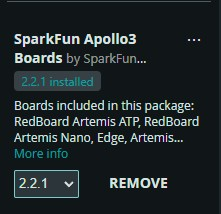
Task 1 Connection
After connecting the Artemis development board to my laptop, I selected 'RedBoard Artemis Nano' as the board type and chose the corresponding USB port.
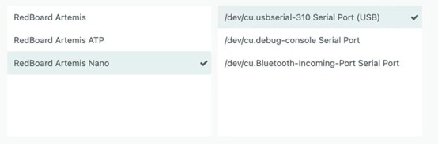
Task 2 Blink
By running the blink function in the example file, it was observed that the LED on the development board was blinking.
Task 3 Serial
Run the Serial function in the example file, select a baud rate of 115200, and enter text (such as "Hello World") in the Serial Monitor. Observe that the serial port outputs the text you just entered.
Task 4 AnalogRead
By running the AnalogRead function in the example file and opening the Serial Monitor, we can see various parameters, including temperature, being printed. Blowing on the development board will show the temperature changing.
Task 5 Microphone Output
In this task, I opened the MicrophoneOutput example file and spoke into the development board's microphone. I could then see the sound frequency being output in the serial monitor.
Additional Task for 5000-level Students
For this task, I modified the code from Task 5. I specified three tones: C5, D5, and F5, corresponding to 523.3Hz, 587.3Hz, and 698.5Hz respectively. If the frequency detected by the microphone is within ±5 Hz of any of these three specified tones, the corresponding tone is output.
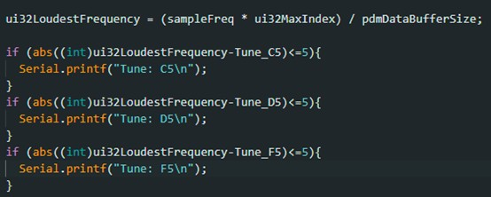
Lab 1B
Prelab
In the pre-lab section, I downloaded Python, obtained the MAC address, activated the virtual environment, and installed the necessary packages.
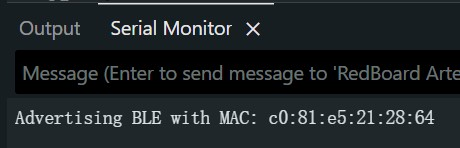
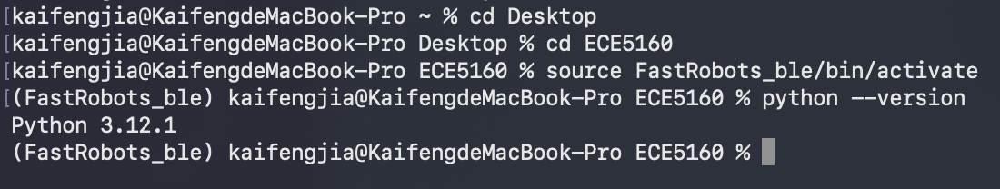
Configuration
In the configuration section, I generated a UUID for Bluetooth communication between the computer and the development board, and configured my MAC address and UUID in the corresponding files.
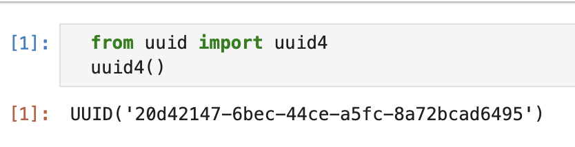
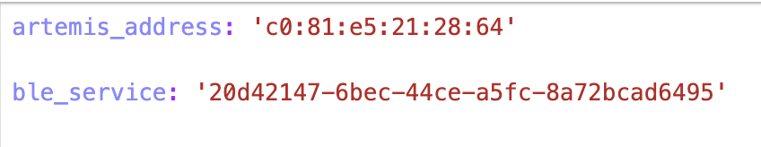
Task 1 ECHO
In this task, I first successfully connected to Bluetooth, programmed and sent the ECHO function, allowing the development board to receive the string, add the extra string "This robot says:" to the beginning, and then send it to the computer.
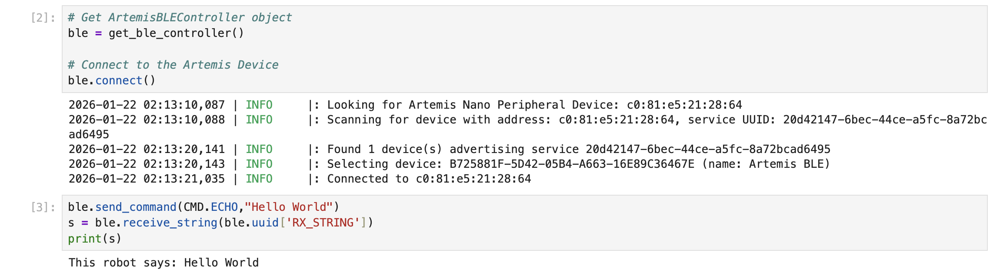
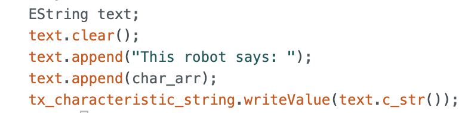
Task 2 SEND_THREE_FLOATS
In this task, I wrote a function that first checks if three numbers are passed as input, and then prints them out sequentially via the serial port.
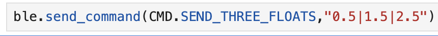
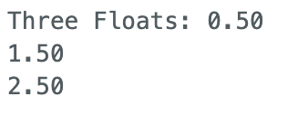
Task 3 GET_TIME_MILLIS
In this task, the time is obtained using the millis() function and returned to the computer as a string variable defined by EString.
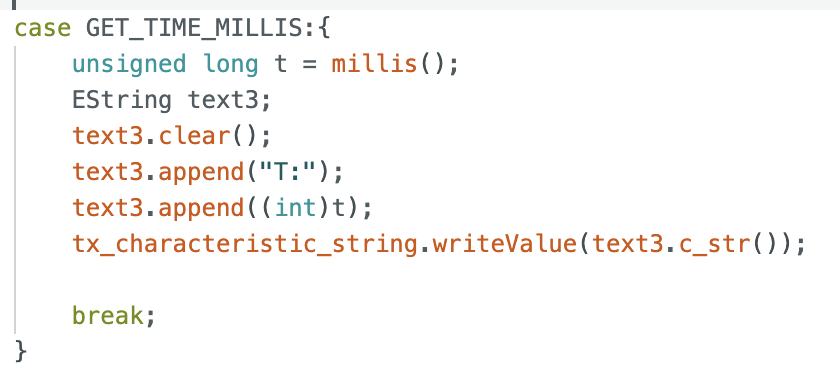
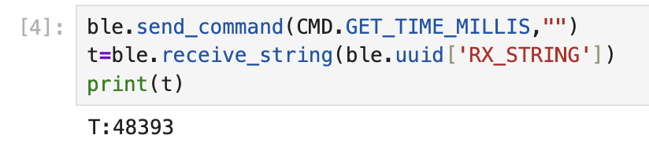
Task 4 Notification
For this task, I defined a function called notification_handler. This function converts the data from the Arduino, which is in array format, into a string format and then prints it. As we can see, running the GET_TIME_MILLIS command immediately displays the current time on the computer.
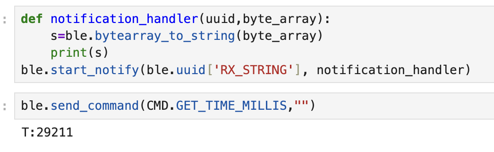
Task 5 TIME_LOOP
For this task, I created a new function called TIME_LOOP. On the computer side, I set a test time, which I set to 5000ms. On the Arduino side, I constructed a loop that transmits the time and its corresponding sequence number to the computer during the specified time. From the results, it can be seen that 286 time messages were transmitted within 5 seconds, so the transmission rate is 286/5 = 57.2 times per second.
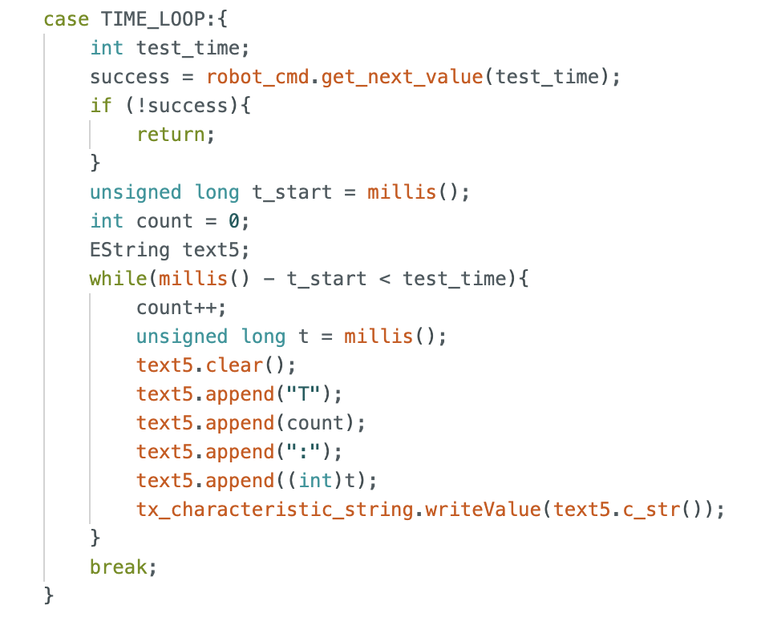
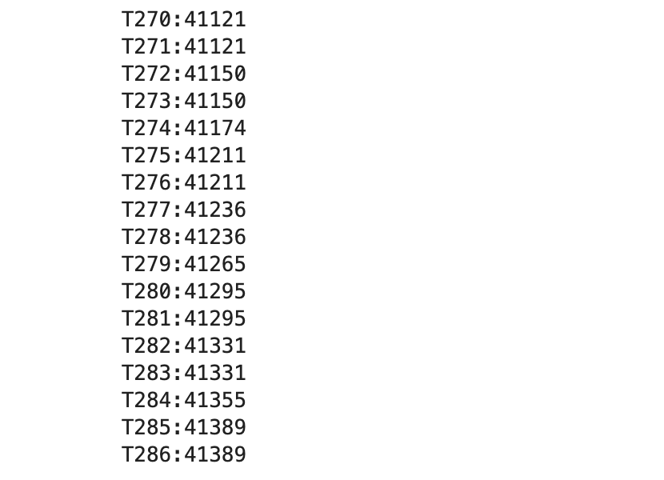
Task 6 SEND_TIME_DATA
For this task, I created a new function called SEND_TIME_DATA. First, the data is stored in an array on the Arduino side, with a maximum capacity of 500 elements. Then, this data is sent to the computer all at once. The results show that 500 messages were transmitted within 42731-42705=26ms, achieving a transmission rate of 19kHz.
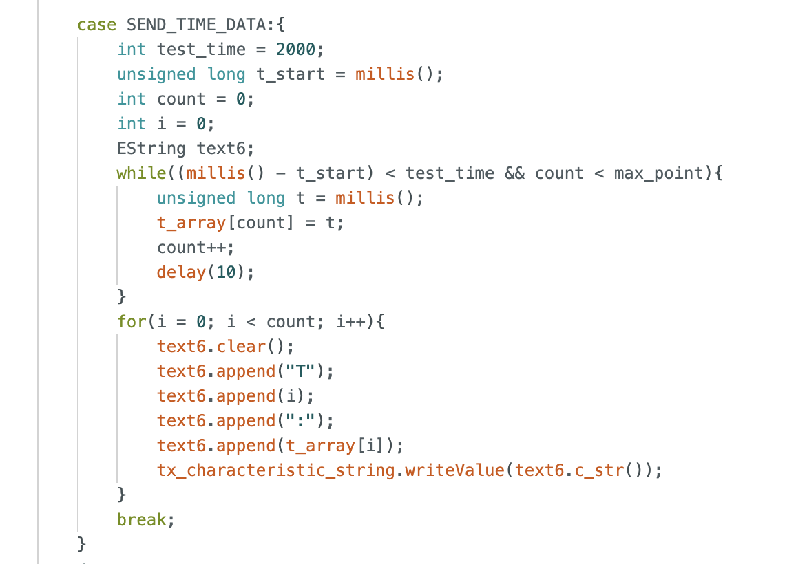
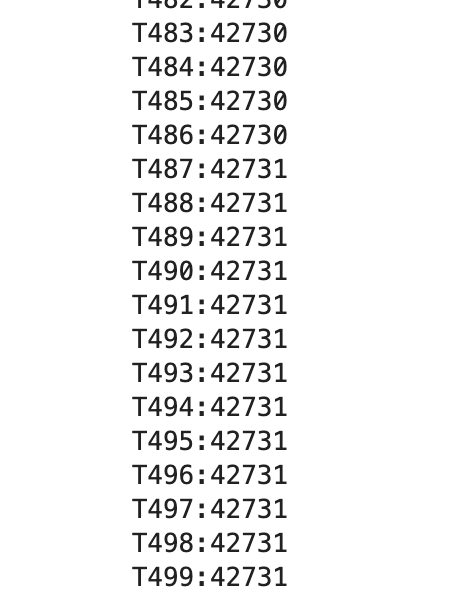
Task 7 GET_TEMP_READINGS
For this task, I created a new function called GET_TEMP_READINGS, built two arrays to store the time and temperature respectively, used the getTempDegF function to obtain the temperature, and then sent all the data to the computer.
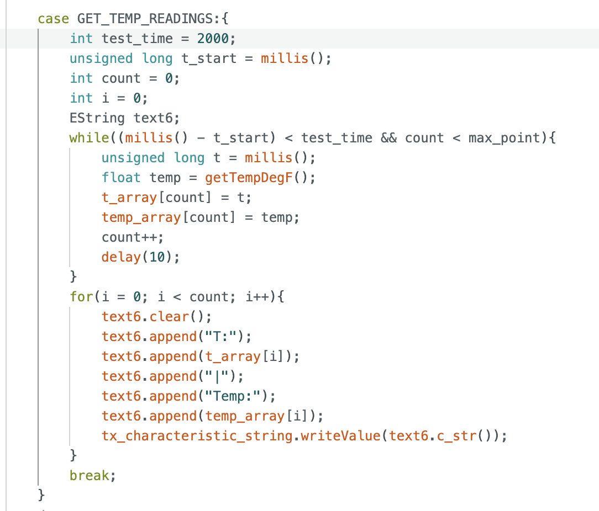
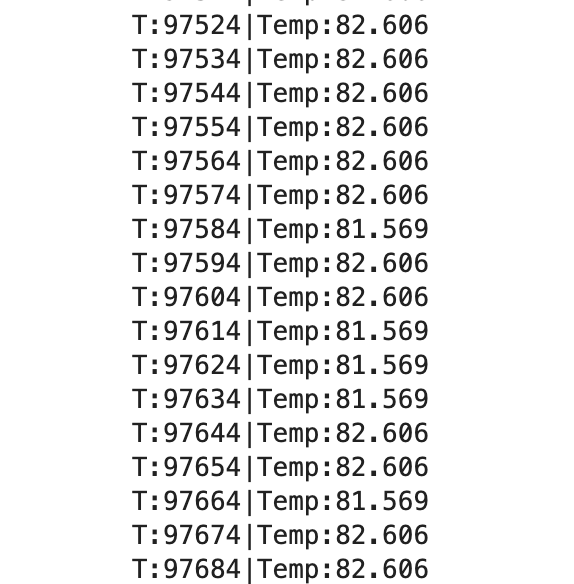
Task 8 Difference between Two Methods
In this experiment, we used two methods to collect data. Task 5 used a method of collecting and sending data simultaneously, while Task 6 collected all the data first and then sent it out in a batch.
The advantages of the first method are: 1. Real-time data monitoring; 2. No need for additional memory. The disadvantages are: 1. Low transmission rate, approximately 57 data points per second; 2. Data is not stored, so data may be lost if the Bluetooth connection is unstable.
The advantages of the second method are: 1. High transmission rate, reaching 19kHz; 2. Data can be stored in an array, ensuring data preservation. The disadvantages are: 1. Data transmission may not be real-time, as data is collected first before being transmitted to the computer; 2. We must consider memory limitations, as data cannot be stored indefinitely.
Considering that the type of t is unsigned long, and each t occupies 4 bytes, the maximum amount of data that can be sent if all 384kB are used is: 384kB / 4B = 96k.
Additional Tasks for 5000-level Students
Task 9 Effective Data Rate and Overhead
For this task, I created a REPLY function that, upon receiving a size value, transmits the corresponding number of 'A' characters to the computer. The computer then uses a for loop to calculate the time efficiency for each given size. The experimental results show that the data transmission rate increases linearly with the increase in packet size, indicating that larger data packets can reduce communication overhead.
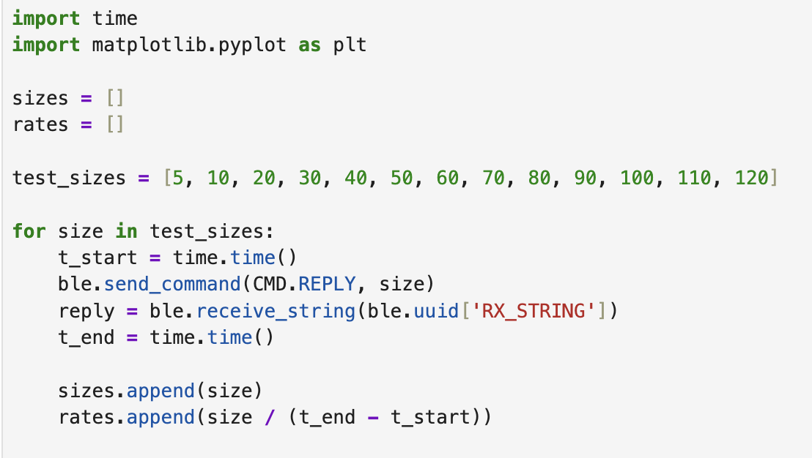
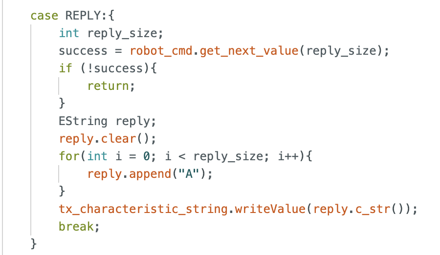
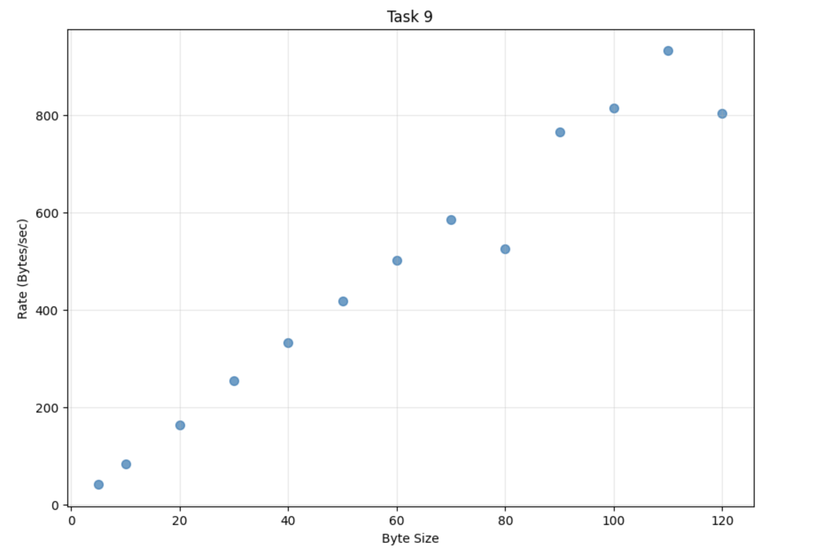
Task 10 Reliability
For this task, I created a RELIABILITY function that transmitted data to the computer 2000 times. An array was created on the computer to receive the data, but ultimately only 145 data points were received. This indicates that the computer cannot receive all the information from the robot at high data rates.
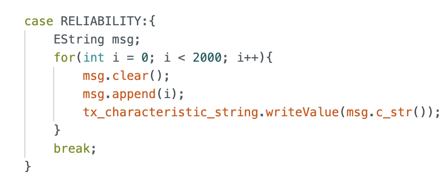
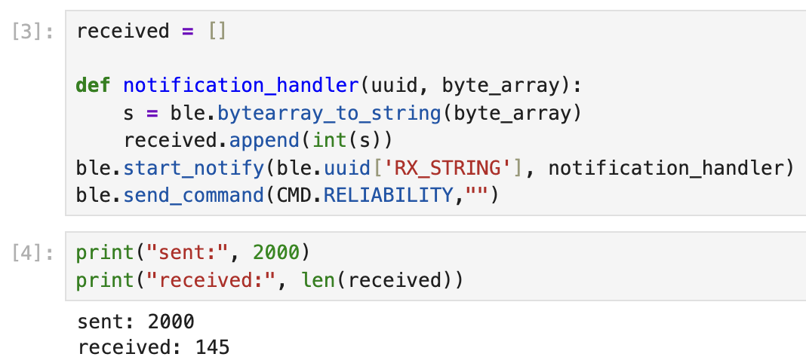
Discussion
In this lab, I feel that my biggest takeaway was gaining practical experience with Bluetooth communication between the development board and the computer, and learning how to analyze the data transmission efficiency during this process and how to improve it.
Statement
In designing my personal webpage, I found Sana Chawla's page from the Spring 2025 semester to be excellent, so I borrowed some of her design elements.